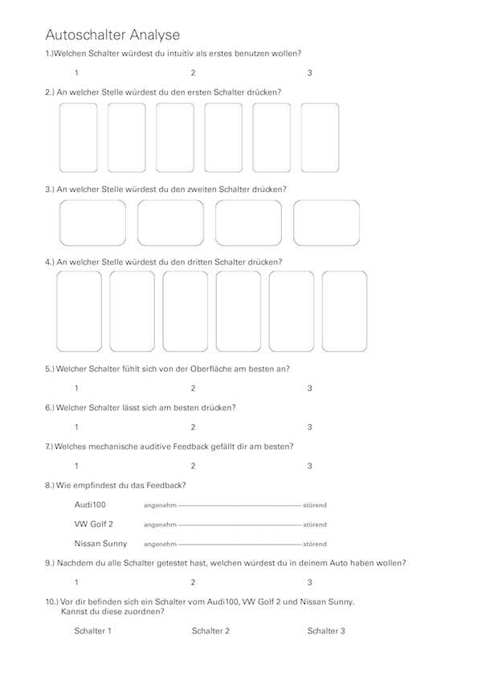
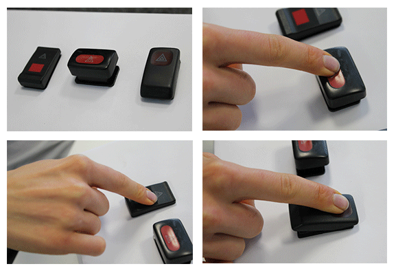
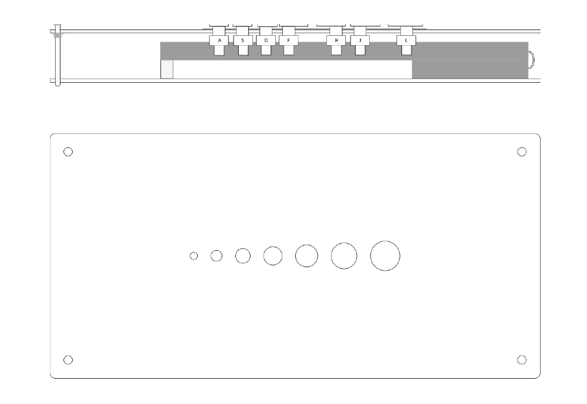
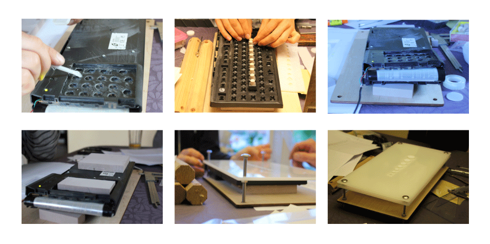
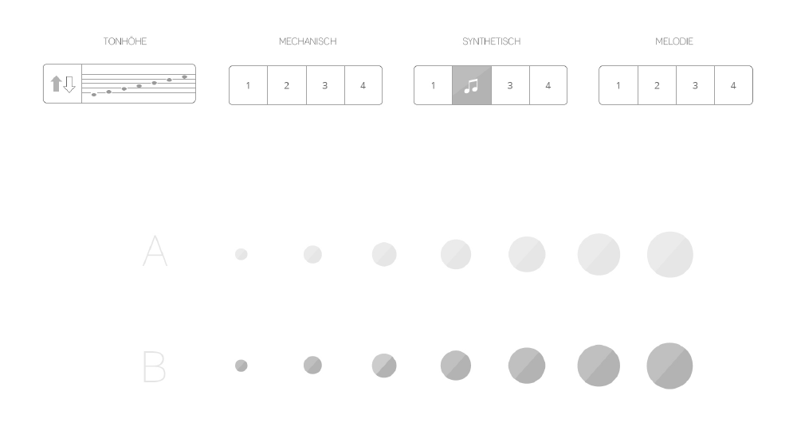
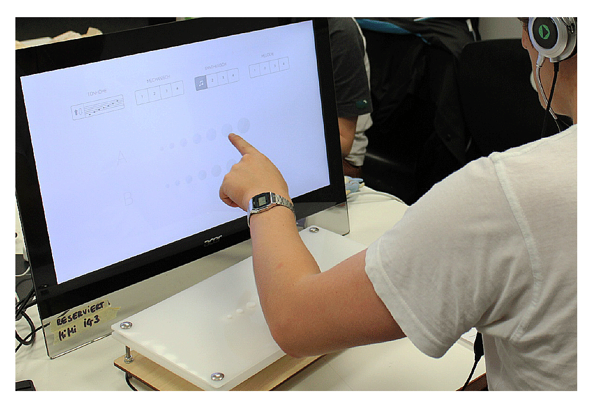

Master Button
3.Semester, teamwork


Description
Considering today's technology, it is found that the moment of time the controls are more and more restricted to the visual perception. As a result, the visual buttons are not as in the earlier period perceived the real keys. This also means that our senses are not fully used. The man thus loses himself in the art. By replacing the mechanical buttons or switches with visual buttons humanity loses the haptic and tactile feeling, and thus the value of a physical button.
Analysis
What is a good button? It has many parameters, size, form, materiality, Pressure and feedback.
We analyzed a large number of buttons and did a survey, in order to find the most importent parameters.


Concept
Test series 1: Reliable Button
Different shapes: round, oval, rectangular and square
x-direction: various size 3-21mm (the 3mm distance)
Materials: Three different materials and texture
Test Series 2 virtual buttons on screen
It created as well as the Test series 1 only virtually.
Test series 3: modular
It can be a separate button with the various parameters are created.
Test series 0-3 flows into a master Button
between solution
A mix between Real and virtual button. a psychic
Button on the shortcut or the icon can change. This is accomplished with the help of an e-paper.


Screen

Code - VVVV

Final
